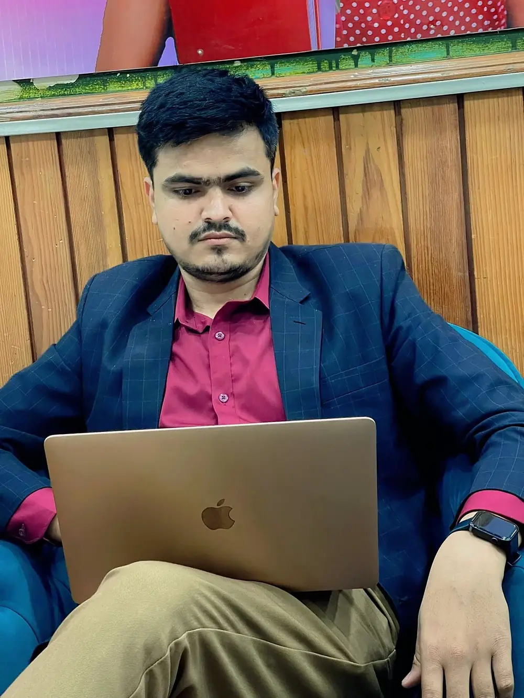
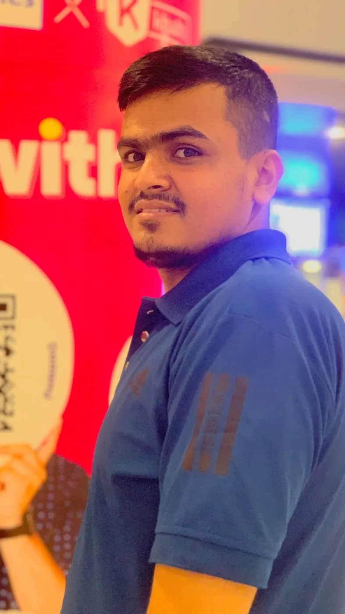

Start from the workflow
Before designing a screen I sit with the people who will use it. Most software problems turn out to be process problems nobody wrote down.
Full-stack developer and Head of IT at Route2Uni International Group. I build backend-heavy CRM platforms and run the cloud they live on.
I'm a full-stack developer and Head of IT at Route2Uni International Group, building backend-heavy CRM platforms and the cloud infrastructure they run on.
I architect Node.js, NestJS and Next.js systems on PostgreSQL, Firebase and MongoDB, exposed through REST APIs, and run them on AWS. Right now I lead the CRM platform rebuild at Route2Uni (50+ staff, 30+ partner integrations) and a CRM and compliance portal for Dreams Care Homes in the UK, as both engineer and technical lead.
I started in IT support in 2023, joined Route2Uni in 2025 as IT Officer for the UK and Nepal teams, and have led its IT department since February 2026.

Most technology problems I see are process problems: accounts nobody offboards, reports built by hand, the same data kept in five places.
I built Kaam Khoj, a free app that helps daily-wage workers find nearby jobs and call employers directly, without paying a middleman.
I ship a working version in weeks, then add access control, backups and monitoring before it grows.
I leave plain code, written docs and accounts in the client's name, so the next person can pick it up without me.
I went to school in Achham and still build for home, including Achham Online and the Kamal Bazar Municipality sites.
I write practical guides on the blog for people starting in IT in Nepal.
Before designing a screen I sit with the people who will use it. Most software problems turn out to be process problems nobody wrote down.
A working version in weeks rather than months. Access control, backups and monitoring go in before it grows, not after something breaks.
Plain code, written documentation and accounts in the organisation's name, so the next person can pick it up without me.
Speaking to students, travelling and time outdoors. Click any photo to see it larger.
